Drop #8 · November 8, 2023 · 19 min read
Hey everyone (▰˘◡˘▰)
Today’s Drop is a long foray into Pocong’s art, an anonymous Indonesian blockchain artist that I, Alessandro, had the chance to meet in my last month’s travel. By exploring Pocong’s project, we delve into the complex Indonesian history in the XX century. It’s probably the first time an article of mine is so centered on history and I’m very happy that this major interest of mine finally emerged in one Drop. I believe that my encounter with Pocong holds relevance also for those interested in the evolution of the blockchain space, both for artistic and political reasons. Finally, thanks to all the people I met in Indonesia for the wonderful moments of nonkrong together. Til next time! And thanks Jeein for the usual, precious edit.
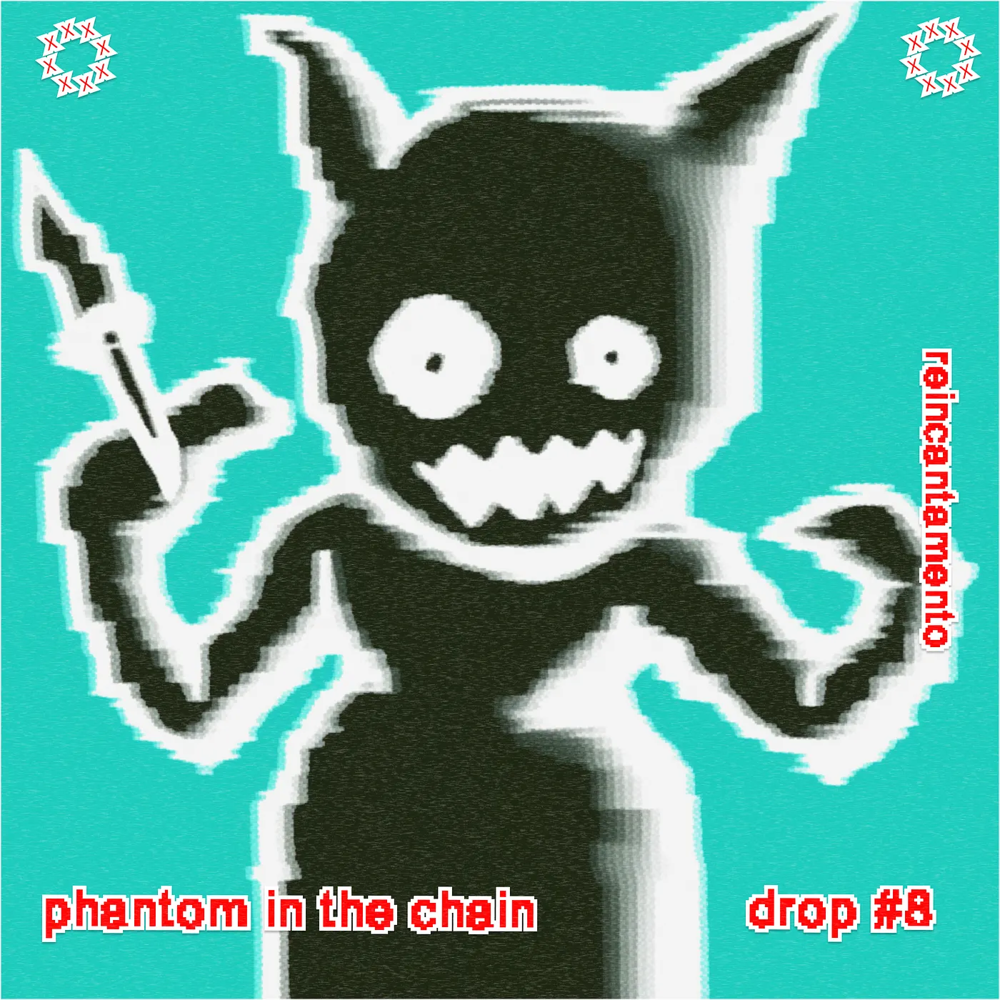
Introduction
“Brace yourself, I'll take you on a trip down memory lane”
- M.a.a.d. City, Kendrick Lamar
“There are many ghosts here. Many people have been killed. They have died from unnatural causes”
- The Act of Killing
On a humid October night, I find myself at Forum Lenteng, an independent cinema space in South Jakarta. We're having a nongkrong session, chatting, eating, and drinking until late. Amidst the conversation, my friend Kifu, upon learning about my interest in blockchain, suggested I look into the work of someone named Pocong, a name with significant meaning, as I would soon discover.
I look up to Pocong’s work on the platform once known as Twitter. I wasn’t impressed at first. His profile resembles many other accounts on the crypto corner of the bluebird social media: abuse of emojis, baroque slang rich with acronyms, and some second-tier profile pictures. I’m skeptical, having embraced my post-crypto era for a long time: I wasn’t interested in clicking on all those flashy-looking links and accounts to understand what was happening with that Pocong.
Luckily, I don’t have to. Not even a week later, I’m sitting at the table with Pocong. It's another humid October night in this unusually extended pancaroba season - the interlude between the dry and rainy seasons. We start to discuss the current - sad - state of the blockchain space, and we both express disappointment and disillusionment with the direction it’s headed in. In a way, also for crypto, it’s pancaroba time: a cycle is over and another one struggles to start and everyone feels stuck. Pocong tells me that in all these years he realized that “People don’t care about the art, they just care about flipping coins”.
On the other hand, the (meatspace) art scene in Indonesia is too crypto-skeptical and it’s hard for them to engage with the technology. We are in Yogyakarta, one of the most important cities for the arts in the Indonesian Archipelago, the Biennale is on and NFTs or crypto-art are nowhere to be seen. Not that this truly bothers me. Europe is not different, AI is the trend topic of the past six months and only Berlin seems to hold on with some crypto-adjacent artistic initiatives. Pocong seems quite hopeless and bored, sitting at the table and exchanging tokens on his laptop while drinking an iced cappuccino.
While talking with him, my mind flowed back to another time, when, where my hopes for crypto were different. In early 2022, I was working at Curve Labs to research the potentialities of crypto-economic media for artistic experimentation and social theories. By designing and deploying the internal mechanism of a programmable economy, practitioners could speculate on new distribution and circulation arrangements, imagining new value forms within their artworks. At the time, we called this idea Mechanism Art and described it as:
“a new concept for creative production, a unique “mode of articulation between ways of doing and making”, and aesthetic practice that curbs the impulse for stoic representation. Mechanism art moves beyond the cynical attitudes toward technology and economics by wielding artistic powers to synthesize new social interiorities.”
With time, I grew up skeptical of the idea because of the constant, almost fetishistic engagement with the technical details, reflecting a classic engineering perspective and little to no attention to the expression released by the incentive system’s development. What vision is your system actualizing? Is it in communication with the external world or just a sophisticated mechanic clock celebrating its own complexity?
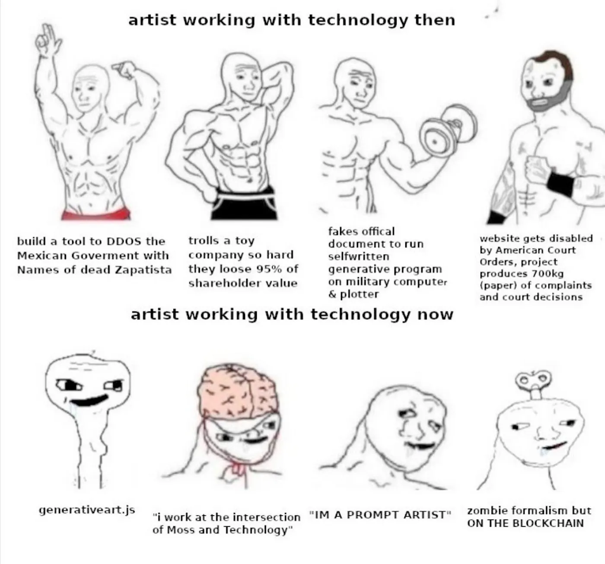
As often happens, one can find answers in memetic production. I believe that the category of “zombie formalism but ON THE BLOCKCHAIN” is a perfect definition for many strains of mechanism art. While formal evolutions can be worthy of admiration or interest, they also feel like just a step in the construction of an impactful artistic intervention, able to materially engage with the present moment.
As I delve into my speculations, Pocong starts to showcase his work. The more he speaks and shares, the more I sense that perhaps here, on the largest island of this gigantic archipelago, far removed from Berlin, I may have discovered new answers to my questions.
A-not-too-fun collection
The Indonesian artist first got interested in crypto in late 2020, attracted by the excited online swarms involved in the NFT craziness of the early ‘20s. Always soaked in the vibrant Javanese art scene, Pocong’s interest rapidly concretized in a project’s idea, adopting NFTs and specifically Profile Pictures as their medium. One year of energy-drink-driven self-learning sessions later (watching one particular Youtube video), Pocong released FantomPocong*: “a not-too-fun NFT collection consisting of 10,000 Pocong with unique traits” on the Fantom Opera Network, a less-known Layer 1 chain, chosen for its cheap gas fees.
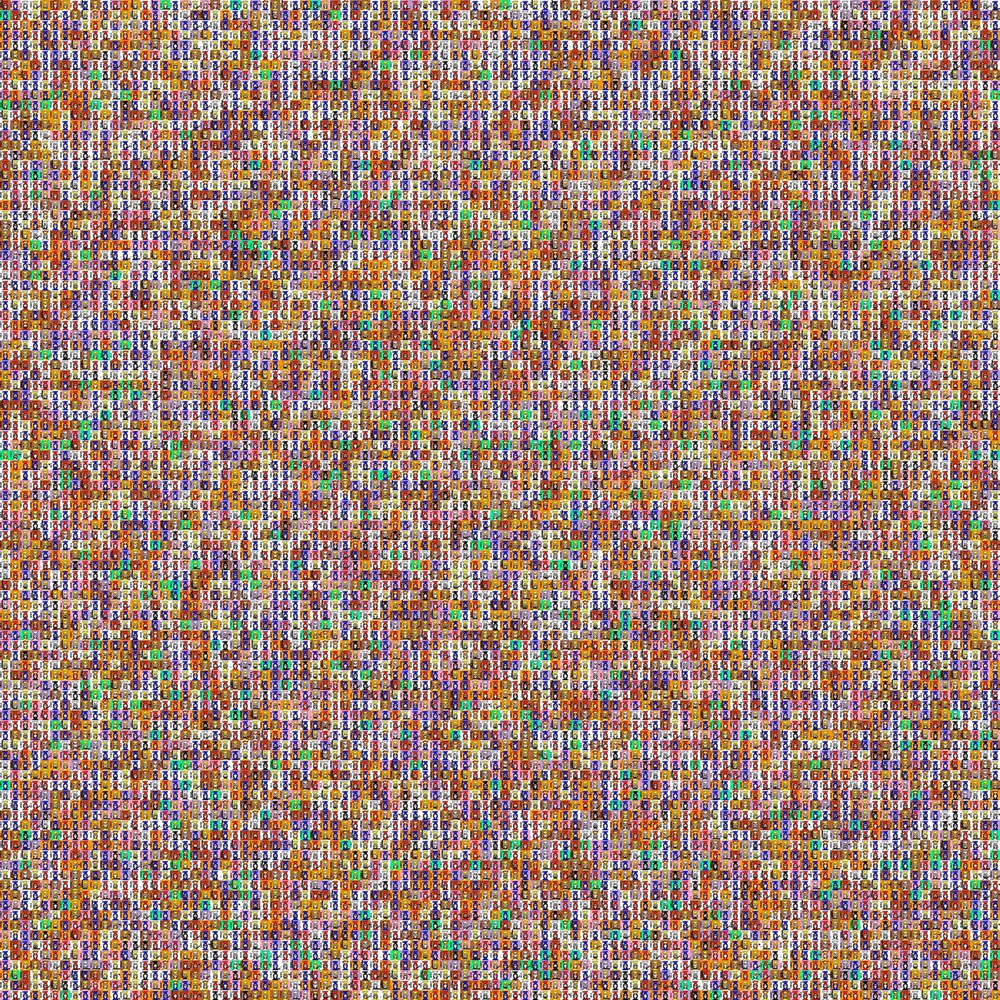
So, what does “Pocong” mean? Pocong is a Javanese term that describes a special kind of ghost, that is said to be the soul of a dead person trapped in their shroud (kain kafan in Bahasa Indonesia). The Pocong is a popular representation of ghosts, it is commonly found in movies and TV shows and was even used to scare citizens during COVID.
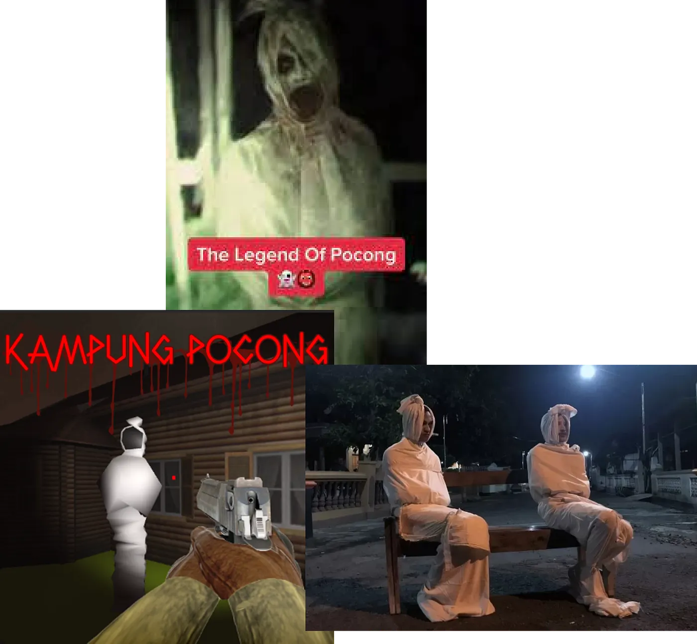
The FantomPocong collection, however, adopts the folklore of Java to comment on some past events in Indonesian history, that are even darker than traditional ghosts. Even more interestingly, it does that by re-purposing and playing with the grammar of various NFT projects. Those anomalies are signaled in the project’s FAQ, for instance:
“Is there any roadmap for FantomPocong?
No. There will be no roadmap till reconciliation betides. It’s been fifty years, but who knows? It may still be a long journey from generation to generations before all the souls can be freed from their shroud.”
What is FantomPocong truly talking about? The project hints all the time at the memory of the Indonesian mass killings of 1965–66, the massacre of at least 500,000 to 1.2 million people, allegedly connected to the Communist Party (Partai Komunis Indonesia), trade unions, leftist organizations, atheist and ethnic minorities like the Chinese one. The killings were perpetrated by the Indonesian military, led by the chief of the military and dictator Suharto, who rose to power in 1966 until 1998, supported by the United States.
With US backing, a violent, authoritarian ruler - the so-called New Order - was established, and massive executions and massacres took place all over the Indonesian islands, leaving a terrible wound in the national conscience. The New Order attempted to conceal the truth through false, sick narratives involving communism and satanism. This is especially true in Indonesia’s most known island in the West: Bali. Vincent Bevins, who penned a great book about these events called The Jakarta Method, reminds us of Bali’s destiny with these words:
“The government buried this history, even deeper than it buried the history of Java. It was necessary to foster the tourism boom that began in the late 1960s. Before Suharto, a huge amount of Bali's island territory was communal and often disputed. "They had to kill the communists so foreign investors could bring their capital here," says Ngurah Termana. "Now, tourists here only see our famous smile," he continues. "They have no idea of the darkness and the fire it hides."
To reveal the hidden darkness and fire, Pocong decided to inscribe in its chosen medium - the NFT - fragments of truths regarding the massacres. Clues and points are hidden in plain sight both in the collection and in the website, visible and noticeable yet not immediately interpretable if one’s not aware of the historical events. The FantomPocong, with their familiar second-tier PFP aesthetics, are containers of the country’s darkest secrets and even their rarity is decided according to the secrets they are encrypting. We can read on the project’s website:
“Some are rarer than others based on the reason behind each act of killing. The reasons are as follows: there were some mass killings hidden from the people to hide the perpetrator and for the sake of effectiveness, and the others were deliberately shown to establish fear and accumulate power to control the society.”
The words appearing next to the avatar - forest, river, street, prison, hills, and so on - represent the sites of the massacres, that took place all over the Archipelago. The most frequent is “river”, Pocong told me, because that’s where most killings happened, especially around the Bengawan Solo river, the longest river in Java (celebrated in this famous pop song). According to some witnesses, in 1965 Bengawan Solo’s waters turned red and bodies covered its surface (you can learn more about it in this documentary).
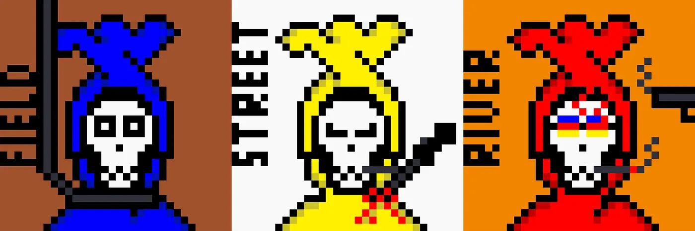
The “hidden” truth of the project is camouflaged by its own NFT art, and lame appearance, adopting all the tropes from this corner of Internet culture: the ugly pixel art, the avatar format, the drafted lore, and so on. Yet, Pocong’s work isn’t only a crypto-art cover-up, as it actively taps into the blockchain’s affordances to counter the narrative on the genocide, established in Indonesia. The artist creates an on-chain memorial - they even refer to the Holocaust Memorial in Berlin - relying on blockchain’s resistance to censorship and its immutable nature. Suharto government denied the massacres for a long time. Bevins writes, “For more than fifty years, the Indonesian government has resisted any attempt to go out and record what happened.” Even after democracy’s return, the Archipelago never dealt with its memory, as the current illegal status of communism still shows. The absurd documentary “The Act of Killing” is also a testament to the genocide’s removal, as it shows a para-military group producing a movie that celebrates (!) the communists’ killings.
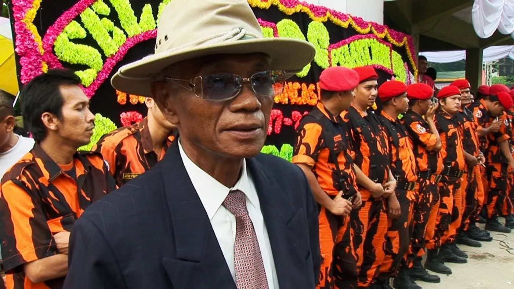
One can perceive the urgency in this message:
“This project may not be at all enough to be a breaker in the chain of violence that occurs and re-occurs. This is too small, but any small means is needed instead of nothing. Any conversation, discussion, forum, or symposium is urgently needed. The government doesn’t seem to want it, for me, it predicts closure and presupposes lies. FantomPocong refuses to forget the tragedy that has rotten society up until now.
Pocong’s crypto-powered approach to national memory is iterated in a second collection titled The 1965 Pocongs, which embraces more explicitly the political undertone. From the title to the total amount of NFTs, the number 1965 is emphasized as a reminder of the massacre year. Moreover, this time the images are accompanied by names of the specific killing’ sites, like Bukit Tengkorak on the island of Aceh, where memories of the genocide are still secluded.
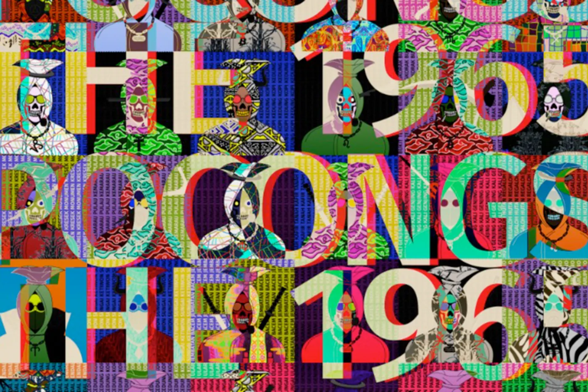
FantomPocong’s two collections expose the "naked cruelty" of these massacres and the absurdity of their scale. Without considering the broader context of the Cold War and Indonesia's role in it, the 1965-66 wave of violence across the archipelago might appear unjustified. To fully comprehend why this occurred, one must continue tracing Pocong’s elusive footsteps through the annals of history.
#NonBlokMovement
On Pocong’s chaotic Twitter profile, a hashtag stands out: #NonBlokMovement. The tag echoes through my memories until it links with a specific name: Bandung. Surrounded by volcanic mountains, the city is the capital of the West Java province, known for its buzzing social scene, important universities, the highest number of metal bands in the world, and, of course, the 1955 Asia-Africa Conference.
The conference was jointly planned and organized by Indian Prime Minister Nehru and Indonesian President Sukarno. Sukarno is a pivotal figure in the country's history. He played a central role in the archipelago's struggle to gain independence from Dutch colonial rule led the nationalist movement and proclaimed Indonesia's independence on August 17, 1945. Over the next four years, Sukarno tirelessly fought for international recognition, which was eventually granted by the Dutch in 1949. Sukarno was widely beloved and respected throughout the country for successfully unifying different factions, including communists and Islamists, under the common goal of creating a new, free nation: "Unity in Diversity".
Six years after gaining independence, Sukarno announced his international vision in Bandung. Also known as the Conference of the Non-Aligned Countries, the meeting hosted representatives from 29 countries, including Gamal Abdel Nasser’s Egypt, Nehru’s India, Iran, Afghanistan, Libya, Lebanon, Turkey, Thailand and more. The Conference represented about half the United Nations and 1.5 billion of the world’s 2.8 billion people and it represented, to use Sukarno’s words as reported by Bevins “the first intercontinental conference of colored peoples in the history of mankind!”. The mere existence of that meeting was the result of a centuries-long fight for independence and freedom, as highlighted by Sukarno’s speech:
“We are gathered here today as a result of sacrifices. Sacrifices made by our forefathers and by the people of our own and younger generations. For me, this hall is filled not only by the leaders of the nations of Asia and Africa; it also contains within its walls the undying, the indomitable, the invincible spirit of those who went before us. Their struggle and sacrifice paved the way for this meeting of the highest representatives of independent and sovereign nations from two of the biggest continents of the globe.…”
The spirit of Bandung laid the ground for a network of new leaders from the south to create the Non-Aligned Movement, an independent alliance of countries that didn’t surrender to the imposed US-URSS geopolitics. It was not an alliance directed by one central nation, like NATO or the Warsaw Pact, nor a coalition based on race or language - the member countries were simply too diverse. The commonality of the struggles and sufferings offered the basis for the Bandung alliance: it was the template for a plural, decentralized, and camaraderie covenant. From that moment in time, different streams of solidarity and paths of alliance originated from that moment.
The spirit of Bandung still resonates with the Indonesian youth as Pocong’s work shows.
Other artists like Cattiamore, NoBitX, Koofraa, Jjjjuneau, Quietpace, Zzaammbb, and Orang Bunian, celebrated the Conference with a collection of 53 NFTs that re-interpreted visual tropes of the Non-Aligned Countries Movement. The result is a unique case of historical remembrance done through extremely online, crypto vernacular, and pixel art aesthetics.
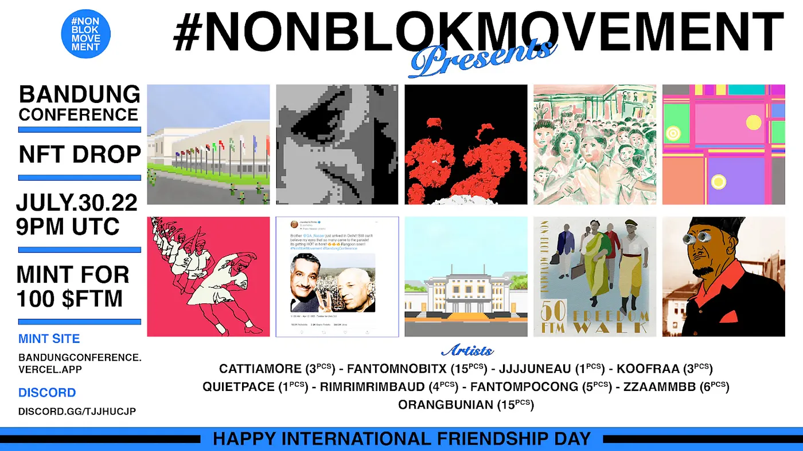
The Bandung Spirit echoes also the present problems of the Indonesian crypto community, which Pocong represents. The #NonBlokMovement emerged from an internal conflict in the Fantom community, where a certain faction monopolized NFT minting on the chain, extracting around 40%-60% of minting fees (from the artists). This formation of young Indonesian artists, among the most active network members in that network, protested, reaffirming the blockchain’s original promise of “eliminating middlemen”. From there, the movement explicitly called for a politicization of crypto-art and a critical engagement with the medium, referring to Rhea Meyers’s pioneering work.
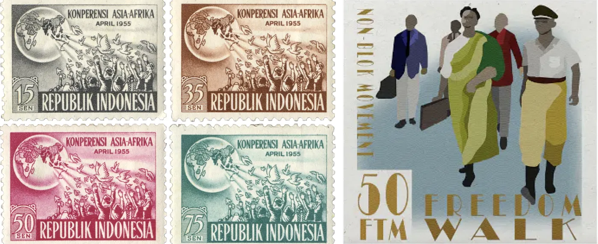
Both with FantomPocong and the #NonBlokMovement, the Indonesian artist explores the connection between official history and memory through the new set of affordances offered by the blockchain. While doing that, it’s almost like the infrastructure itself - the chain, the NFTs - got dragged into the conversation and permuted by the weight of the historical events of Indonesia. So, the Non-Aligned Countries Movement becomes a model for internal friction within the crypto-space and an inspiration to affirm the original, cypherpunk spirit of the technology.
In this process, Pocong’s work writes history, allowing the public to reconstruct the general picture of the Indonesian XX Century. So, how does Bandung have something to do with the massacres? What changed in Indonesia in ten years, bringing the country from a leading international position to a civil war with shocking violence? The darkness came from the West.
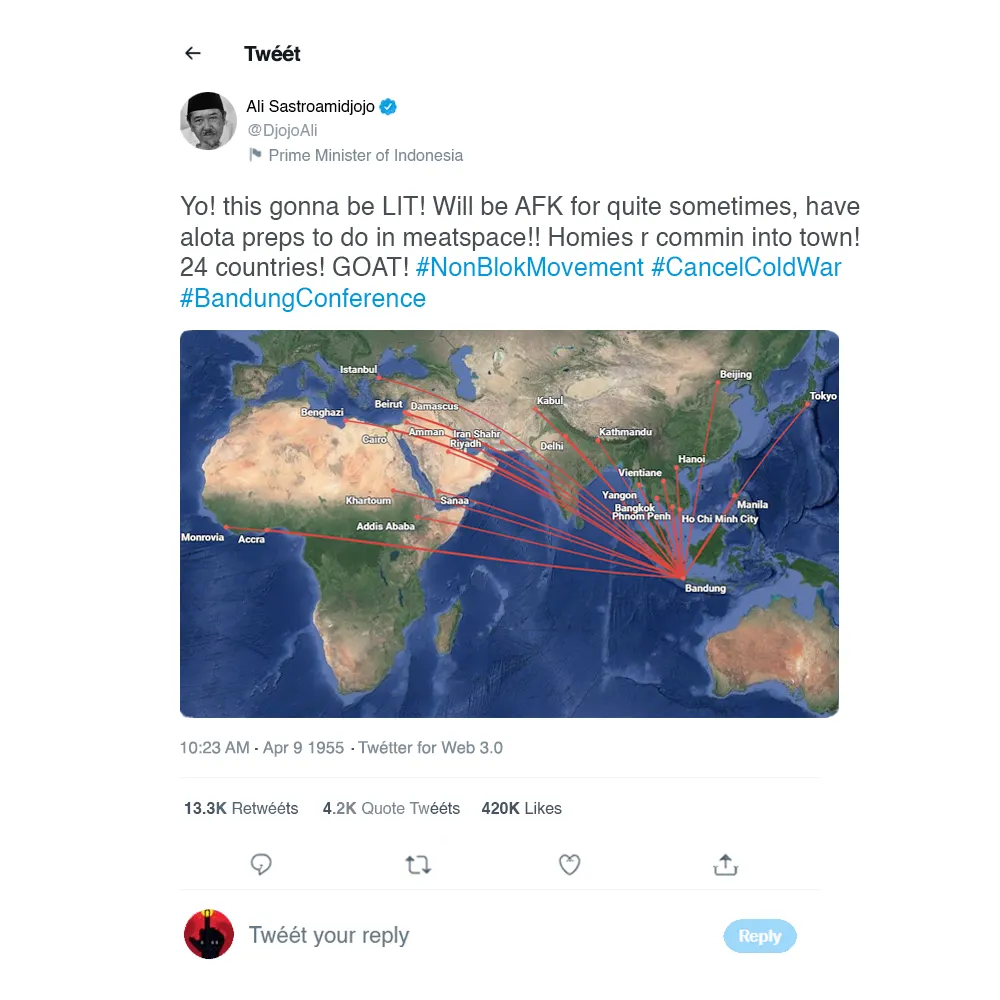
The Jakarta Method
The imperialistic states didn’t ignore what happened in Bandung in 1955. What concerned the US was the growing proximity of many of the Non-Aligned countries to the USSR, at least in terms of funding and infrastructural support. One could argue, with Bevins, that the US foreign policy in the 35 years after Bandung, was an extensive, violent attempt to break the ties that started to be forged on those days of April. Under the guise of “anti-communism”, the American Empire wove a reactionary Internazionale, a Holy Alliance capable of everything to fight the Red Devil.
In Indonesia, the CIA feared a Communist revolution, as the KPI grew to be the strongest communist party in the world (after China and URSS). So, in the wake of the massacres, the US-funded military took power against Sukarno and installed Suharto, who then provided to unleash genocide all over the archipelago. The Suharto dictatorship naturally aligned with the US interests opening investment opportunities to North American businesses and cutting ties with the URSS. Again Bevins:
“This was an obvious victory for US geopolitical interests as Washington understood them at the time. And for hardened anticommunists around the world, the method behind this “savage transformation” would soon be seen as an inspiration, a playbook.”
The “Jakarta Method”, as they called it, inspired anti-communist violence and far-right operations in Brazil and Chile. As the picture below shows, in the days before the Pinochet coup, graffiti saying Jakarta is Coming (Ya Viene Yakarta) appeared in right-wing and high-class neighborhoods in Santiago. And this is not a matter of the past: this blood-curdling graffiti re-appeared in 2021 in Kyiv, celebrated by fascist organizations online.
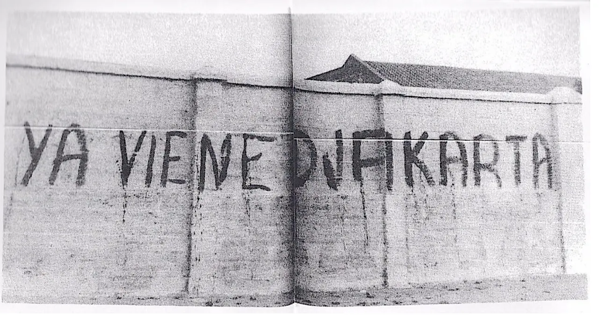
Assembling grassroots archive
The haunting events of the Sixties influenced Indonesia for a long time. The New Order regime established a violent rule on the archipelago, governing through the army, supporting the international capital, and silencing dissent in every form. The economic growth and post-'60siticization of society post-’60s created a silent acceptance of the status quo. Then, the markets started to crumble. affected a big financial crisis invested Asia, particularly hitting the deregulated Indonesian banking system and leading to massive waves of hyperinflation, leaving millions of Indonesians in poverty. The sleeping dissent against the regime then exploded in episodes of civil unrest and ethnic conflict all over the Archipelago. This confusing situation eventually led to the fall of Suharto’s regime and the return of democracy: the Reformasi (reform) era was open.
This historical moment marked the return of a collective spirit in civic society, with organizations and collectives forming everywhere. This trend was especially conspicuous within the artistic community, and its epicenter lay between Jakarta and Yogyakarta, the city where my initial encounter with Pocong took place. For instance, ruangrupa, the worldwide famous Indonesian collective that curated Documenta 15, was founded in the capital just three years after the regime’s fall. In Yoghakarta, the Cemeti Institute is the first post-Reformasi collective art formation, that is now established as a relevant institution.
In 2022, Cemeti collaborated with Pocong and with another artists’ collective, Proyek Edisi, to orchestrate a performance centered on the memory of this recent period. The performance, Mencari Kabar, was an act of collective archiving on the blockchain with selected participants to mint NFTs with articles regarding the monetary crisis of 1998 (ironically) and to represent its effects on the local communities. So, in the performance, Pocong tackles another national trauma and draws a magic, healing circle to reflect together on the deep causes of the Reformasi.
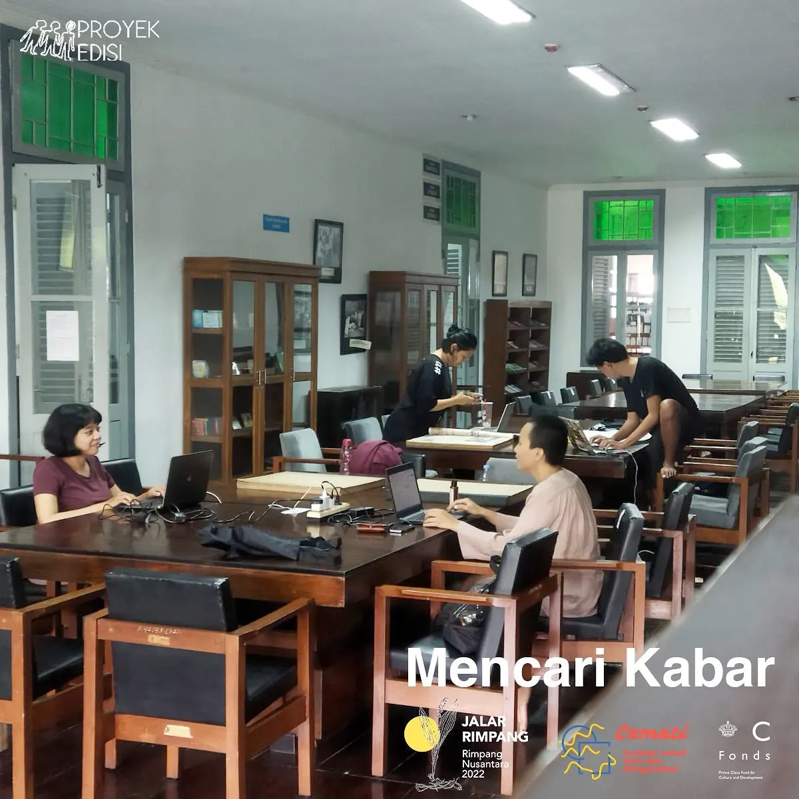
In a country where memory is notably fragmented, Pocong and PROYEK EDISI tried to leverage blockchain technologies to develop a grassroots archive, to adopt Ulli Diemer’s expression. By establishing such a knowledge site, the group planted the seeds of a nascent counter-narrative that could eventually grow hegemonic and reclaim Indonesian’ history at large.
Furthermore, it does that by sharing new tools with a different audience while uncovering “the production process and the product of on-chain-NFTs”, opening up the “secrets” of these technologies. Pocong declared to be inspired by Dimaz Ankaa Wijaya's paper and the idea that:
"By publishing information using the blockchain, the information also carries the characteristics of Bitcoin transaction: anonymous, decentralized, and permanent."
So, in the performance, Pocong tackles yet another national trauma and draws a magic, healing circle to reflect together on the deep roots of the Reformasi and the problematic experience of massive inflation.
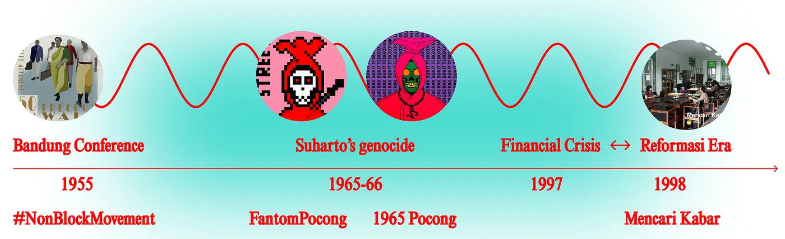
Pocong whispers the dark root causes of his country’s history in the crypto audience’s ear and inscribes them on-chain, forever. The artist-programmer learned how to live in the flow of this hyper-online, grotesque culture. In navigating this space, he brought Indonesian history to a new space and he pieced together a fragmented memory using the security of the blockchain. When I look at Pocong, unfazed and softly passionate, speaking a down-to-earth lingo, very different from the theory talk I hear (and speak) so much about in Berlin, I feel that another approach to these technologies is possible. Maybe, to realize Mechanism Art less technical grandeur and economical plotting are necessary, and more funny haste to experiment and impact the world. The memory machine that is blockchain needs deep, historical reminiscences to express its potential truly.
William Magnuson wrote:
“Even if the blockchain has not lived up to its greatest aspirations, it has accomplished something even more important. It has captured the imagination of individuals across the globe and inspired people to question how the basic building blocks of society work, and how they don’t. This, perhaps, will be its greatest legacy.”
On that humid night in Yogyakarta, this legacy was alive and fermenting in the streams of history.